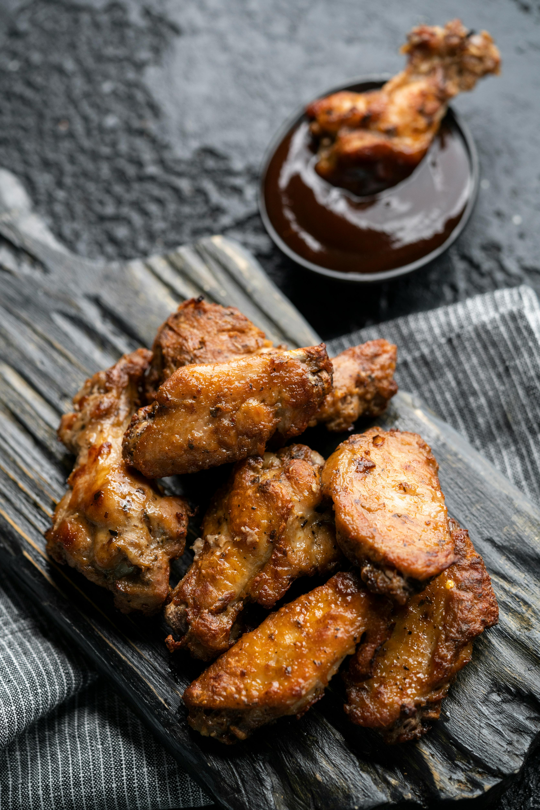

Chicken Wings Recipe

Description
Everybody likes chicken wings! You can enjoy it as an appetizer, or as a main dish with other sides. Whether deep fried, baked, or smoked, wings are a delicacy enjoyed at any event.
This recipe is a homerun everytime. It is quick and easy to make. The wings are great, naked, but your favorite choice of sauce compliments the recipe really well.
Ingredients
- 4 pounds chicken wings, halved at joints, wingtips discarded.
- 2 tbs salt free garlic seasoning.
- 1 tbs salt.
- 1 tsp black pepper.
- 1 tsp smoked paprika.
- 2 tbs baking powder*, aluminum free.
Instructions
- Adjust your oven rack to the upper-middle position. preheat oven to 425°F.
- Line a baking sheet with aluminum foil and place a wire rack (cooling rack) on top. Spray the rack with non-stick spray.
- Use paper towels to pat the wings dry and place them in a large bowl. It's important to dry them really well!
- Combine the salt, pepper, salt free garlic seasoning, paprika, and baking powder in a small bowl. Sprinkle the seasoning over the wings, tossing to evenly coat.
- Arrange wings, skin side up, in a single layer on prepared wire rack.
- Bake on the upper-middle rack, turning every 20 minutes until the wings are crispy and browned. The total cook time will depend on the size of the wings but may take up to 1 hour.
- Remove from the oven and let stand for 5 minutes. You can enjoy the wings as they are or toss them with your favorite sauce.